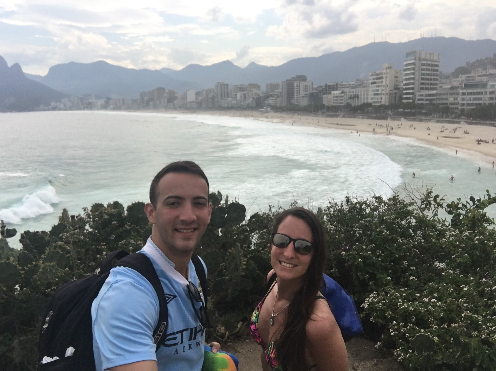
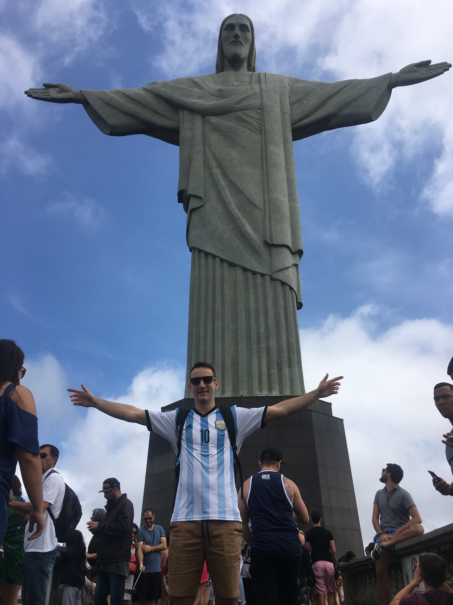
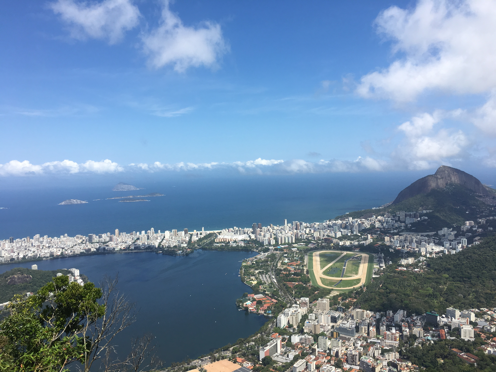
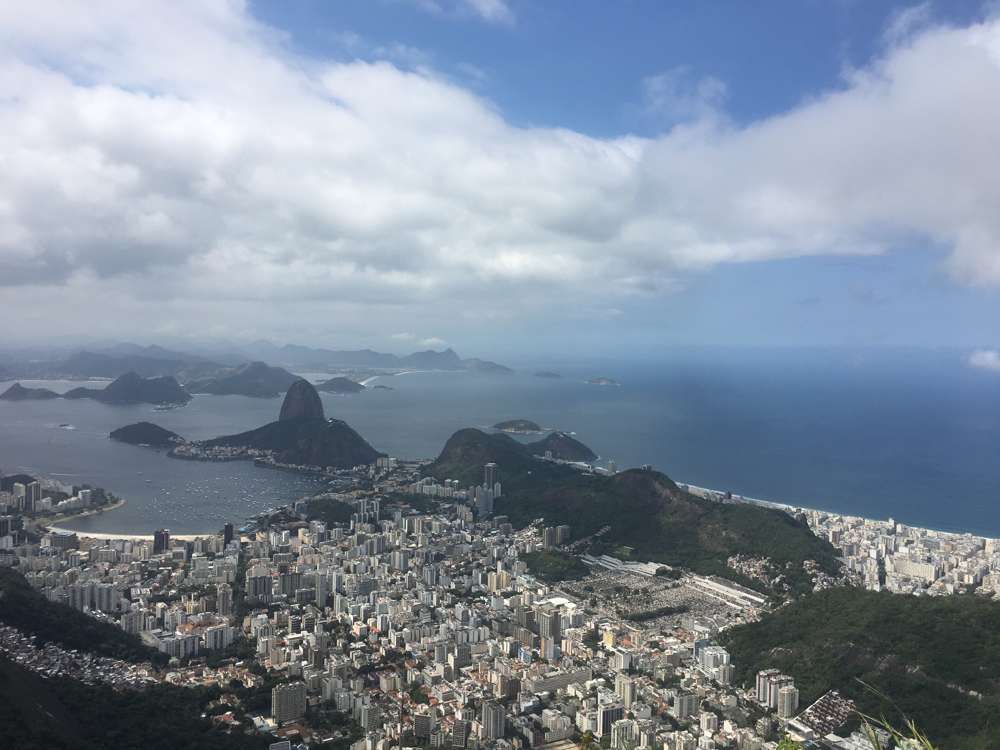

Armação dos Búzios o, simplemente, Búzios es una ciudad brasileña situada en el Estado de Río de Janeiro, en la costa brasileña, a 190 kilómetros al este de Río de Janeiro. Esta antigua aldea de pescadores hoy es un destino turístico que atrae cada año a turistas en busca de sus playas y vida nocturna. Su población es de 30 4392 habitantes y su área de 69 km².
Está localizada en una península de 8 km de extensión con 23 playas. Por un lado recibe corrientes ecuatoriales y por el otro las provenientes del Polo Sur, lo que hace que tenga playas con aguas cálidas y heladas a la vez. Entre las principales playas se destacan Geribá, João Fernandes, Ferradura, Ferradurinha, Rasa, Manguinhos, Tartaruga, Brava e Olho-de-Boi, esta última reservada para la práctica del nudismo. Está a casi 27 km de Cabo Frío, la ciudad más cercana, de cuyo municipio dependió administrativamente hasta 1995.
Sus fuertes vientos son ideales para la práctica de la vela y el vuelo libre.
Es una ciudad que alberga diversas culturas con un gran número de extranjeros.





